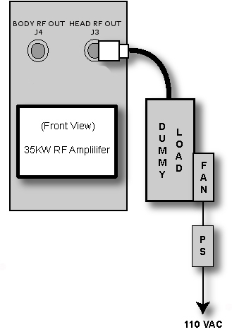
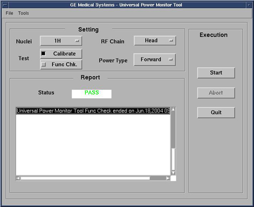
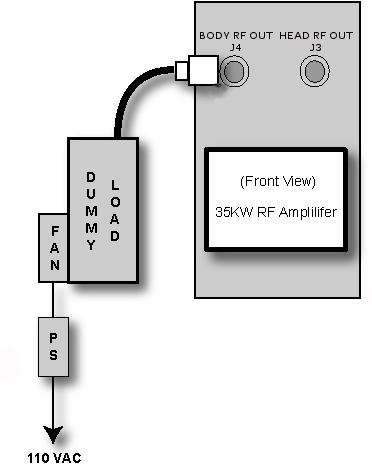
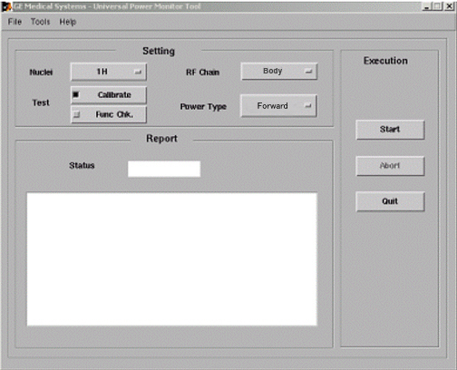
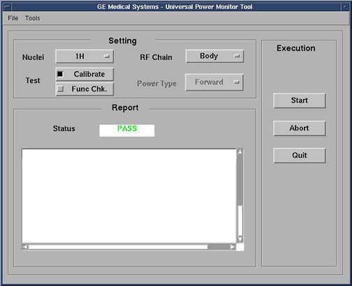
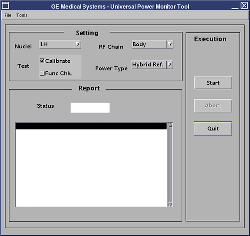

GE Exclusive Use Only
Direction 5500113, Rev# 3
Discovery MR750 3.0T Service Methods
Module Version 17.0, Version Date 1/11/10
GE Exclusive Use Only |
| Required Persons | Preliminary Reqs | Procedure | Finalization |
|---|---|---|---|
| 1 | Not Applicable | 1 hour | 10 mins |
This procedure sets up the Universal Power Monitor (UPM) for 3.0T LCC300 systems in both Head Mode and Body mode using the system and the Power Measurement Kit.
| Item | Qty | Effectivity | Part# | Manufacturer | |
|---|---|---|---|---|---|
| Power Measurement Kit (Wattmeter Kit) | 1 | - | 5307511 | - | |
| ||||
| FATAL ELECTRIC SHOCK HAZARD! | ||||
| Dangerous voltages throughout the cabinet. | ||||
| TO PREVENT FATAL ELECTRIC SHOCK, MAKE SURE THE RF AMPLIFIER IS DISABLED WHEN CONFIGURING THE CALIBRATION TOOLS. |
Inhibit the Transmit/Receive (TR) faults. Disable the Driver Module TR and DD fault detection in the PEN cabinet. (See Illustration 1.) Move Switches SW2 and SW3 to the TR DISABLE and DD Disable positions respectively.
Illustration 1: Driver Module Front Switches

Move the RF ENB switch on the front of DTX1 Exciter in top of the Penetration Cabinet to the DISABLE (DOWN) position as shown in Illustration 2.
Illustration 2: RF ENB Switch

Connect the RF Amplifier to the Dummy Load:
Remove the Head Heliax cable from HEAD RF OUT / J3.
Connect the 35 kW RF Dummy Load to HEAD RF OUT / J3. (See Illustration 3.)
Plug the Dummy Load power cable into a 110 VAC service outlet in the system cabinet.
| NOTE: | Make sure the fan is running on the 35kW RF Dummy Load. |
Illustration 3: Setup for 3.0T LCC Head Output Measurement

| ||||
| This tool must have the head coil installed in order to enable Coil ID. | ||||
Enable the RF ENB switch on the front of DTX1 Exciter in top of the Penetration Cabinet by moving it to the ENABLE (UP) position.
With head coil attached to the LPCA, landmark on the head coil and advance to scan.
Start the Common Service Desktop (CSD) , then click the Calibration browser tab.
Start the UPM Calibration Tool.
Restricted Service tools are available to GE Field Service only.
Make sure your service key is installed.
From the Calibration menu, select [Calibration Wizard], then click the link: Click here to start this tool.
Once the Calibration Wizard starts, select [UPM Calibration (Head and Body)] from the menu, review and validate the pre and post dependencies.
To start the procedure, click the link: Click here to start this tool. If unable to start the Restricted Service tools, use the non-proprietary method described in the next bullet.
To start non-proprietary service tools:
From the CSD, select the Calibration tab.
From the Calibration menu, select [UPM Tool]
To start the procedure, click the link: Click here to start the tool. (See Illustration 4.) Illustration 5 shows an example of the user interface of the UPM tool.
Illustration 4: Common Service Desktop

Illustration 5: Universal Power Monitor Tool User Interface

| NOTE: | The first time running the UPM Calibration tool after a Load from Cold, if the following error message displays, The spectroRFampType and upm.config do not match!, click File -> Edit Config. When the window opens, click [Restore Defaults] , [Save], and close the window. The tool should now have the correct information so that this pop-up does not display again during future UPM calibrations. |
For Nuclei, select [1H].
For RF Chain, select [Head].
For monitor Power Type, select [Forward].
Select [Calibrate].
Select [Start] and validate the hardware setup, then select [Yes].
Verify that the status indicates a PASS or FAIL within about 2.5 minutes. The tool should notify user of current step in progress. (See Illustration 6.) If failure occurs, refer to Universal Power Monitor (UPM) Troubleshooting .
Illustration 6: Head Calibration, PASS Status

Before proceeding, disable the RF ENB switch by moving it to the DOWN position as shown in Illustration 2. Review the Safety section at the beginning of this procedure.
On the front of the RF Amplifier, disconnect the RF Dummy Load from HEAD RF OUT / J3, and leave J3 open and unconnected.
Enable the RF ENB switch by moving it to the UP position.
Return to the Universal Power Monitor Tool user interface.
For Nuclei, confirm [1H] is selected.
For RF Chain, confirm [Head] is selected.
For monitor Power Type, select [Reflected].
Confirm [Calibrate] is selected.
Select [Start] and validate the hardware setup, then select [Yes].
Verify that status indicates a Pass or Fail within about five minutes. (Tool should notify user of current step in progress.) If failure occurs, refer to Universal Power Monitor (UPM) Troubleshooting .
Quit the tool and do a TPS Reset.
Proceed to the UPM- Body and Head Functional Check and perform the Head Functional Check procedure before going to Finalization.
Inhibit the TR faults, and disable the Driver Module TR and DD fault detection. (See Illustration 7.) Ensure switches SW2 and SW3 are in the TR DISABLE and DD DISABLE positions respectively.
Illustration 7: Driver Module Switches
Disable the RF ENB switch by moving it to the DOWN position as shown in Illustration 2.
Connect the RF Amplifier to the Dummy Load:
Remove the Body Heliax cable from BODY RF OUT / J4.
Connect the 35 kW RF Dummy Load to BODY RF OUT / J4. (See Illustration 8.)
Plug the Dummy Load power cable into a 110 VAC service outlet in the system cabinet.
| NOTE: | Make sure the fan is running on the 35kW RF Dummy Load. |
Illustration 8: Plug Dummy Load into J4, Body Out

This tool must see a Landmark only. It is not necessary to have a Body Phantom in place or any other scan parameter entered other than what is described below. Simply Landmark on the cradle where the Body Phantom would be.
| NOTE: | Remove the Head coil, and ensure it is not connected. |
Enable the RF ENB switch by moving it to the UP position.
Start the CSD, then click on the Service browser tab.
Start the UPM Calibration Tool.
Restricted Service tools are available to GE Field Service only.
Make sure your service key is installed.
From the Calibration menu, select [Calibration Wizard], and click the link: Click here to start this tool.
Once the Calibration Wizard starts, select [UPM Calibration (Body)] from the menu, review, and confirm the pre and post dependencies.
To start the procedure, click the link: Click here to start the tool. If unable to start the Restricted Service tools, use the non-proprietary method described in the next bullet.
Starting non-proprietary service tools:
To start the procedure from the CSD, select [Calibration]. (See Illustration 9.)
Illustration 9: Example of Common Service Desktop
From the Calibration menu, select [UPM Tool], then click the link: Click here to start this tool. Illustration 10 shows an example of the user interface of the UPM tool.
Illustration 10: Universal Power Monitor User Interface

| NOTE: | The first time running the UPM Calibration tool after a Load from Cold, if the following error message displays, The spectroRFampType and upm.config do not match!, click File -> Edit Config. When the window opens, click [Restore Defaults] , click [Save], and close the screen. The tool should now have the correct information so that this pop-up does not display again during future UPM calibrations. |
For Nuclei, select [1H].
For RF Chain, select [Body].
For monitor Power Type, select [Forward].
Select [Calibrate].
Select [Start] and verify the hardware setup works, then select [Yes].
Check that the status indicates a PASS or FAIL within about three minutes. (he tTool should notify user of current step in progress. (See Illustration 11.) If failure occurs, refer to Universal Power Monitor (UPM) Troubleshooting .
| NOTE: | Do the following step last. A TPS Reset is needed before running the UPM Functional Checker. |
Proceed to UPM - Body & Head Functional Check and perform the Body Functional Check procedure before moving to Finalization.
Illustration 11: Body Calibration, PASS Staus

Disable the RF ENB switch by moving it to the DOWN position as shown in Illustration 2.
Disconnect the RF Dummy Load from BODY RF OUT / J4 on the front of the RF Amplifier as shown in Illustration 8, and leave J4 open and unconnected.
| NOTE: | The head cable may remain disconnected if an RF Head output calibration was just completed. |
Enable the RF ENB switch by moving it to the UP position.
Return to the Universal Power Monitor Tool user interface.
For Nuclei, confirm [1H] is selected.
For RF Chain, confirm [Body] is selected.
For monitor Power Type, select [Reflected].
Confirm [Calibrate] is selected.
Select [Start], validate the hardware setup, then select [Yes].
Verify that the status indicates a PASS or FAIL within about three minutes. (Tool should notify user of current step in progress.) If failure occurs, refer to Universal Power Monitor (UPM) Troubleshooting.
Disable the RF ENB switch by moving it to the DOWN position as shown in Illustration 2.
Connect the System Body output cable to J4.
Move the Driver Module SW2 TR ENABLE switch into the Enable (Up) position.
Disconnect the body quadrature hybrid cables at J2 and J3 on the hybrid in the magnet room.
Enable the RF ENB switch by moving it to the UP position.
Return to the UPM Tool interface.
For Nuclei, confirm [1H] is selected as shown in Illustration 12.
Illustration 12: UPM Tool Interface

For RF Chain, select [Body] as shown in Illustration 12.
For monitor Power Type, select [Hybrid Ref.] as shown in Illustration 12.
Confirm that [Calibrate] is selected. (See Illustration 12.)
Select [Start] and validate the hardware setup, then select [Yes].
Check that the status indicates a PASS or FAIL within about five minutes. (Tool should notify user of current step in progress.) If failure occurs, refer to Universal Power Monitor (UPM) Troubleshooting.
Disable the RF ENB switch by moving it to the DOWN position as shown in Illustration 2.
Remove the cables and power measurement equipment.
Reattach the Head J3 cable and Body Hybrid J2 and J3 Heliax cables.
Enable the RF ENB switch by moving it to the UP position.
Confirm that switch SW2 is set to TR ENABLE and switch SW3 is set to DD ENABLE for TR drive fault detection. (See Illustration 1.)
Upon completion of any UPM calibration, click [Reset TPS]. The system cannot scan until this step is complete.